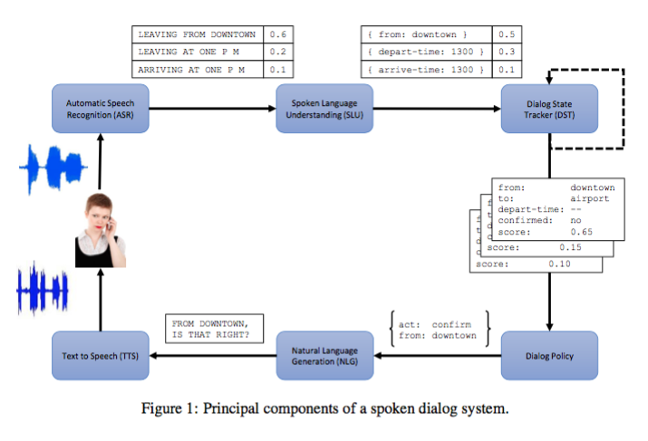
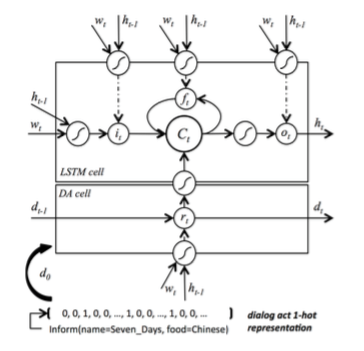
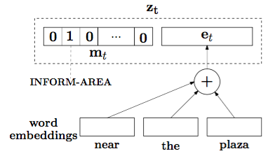

PaperWeekly 第二期
引

图片来自paper The Dialog State Tracking Challenge Series- A Review
人机对话系统通常包括上面的几个部分，task-oriented chatbot重点关注的是DST和NLG问题，其中DST是核心问题，没有太多关注这个比赛，但个人理解DST的作用类似于一张user conversation logs状态表，记录着用户当前的状态，以订机票为例，这张表的key是预先设定好的slots，比如目的地、出发地、出发时间等等，与系统背后的业务数据表中的attributes相关联，不断地从user conversation中抽取相应的values来填充这个表格，或者将其定义为一个多分类任务，不断地从对话中判断这句话中包括哪些slots和values（这里的values是多个分类结果），当状态表中的信息存在空白时，bot会根据空白的slots来提问并获取values，直到获取到足够的slots，给出用户suggestion，或者进行相应的服务。
DST的问题解决之后，就是NLG的问题。传统的NLG采用rule-based或者template-based的方法，需要很多的手动设置，横向扩展性较差，维护成本高。最近流行的end-to-end方案很适合解决这个问题，给定用户的query，结合着当前DST，自动生成response，完全的data driven，不需要什么人工干预。
生成response除了rule-based和end-to-end的方法之外，工业界中更加常见的是retrieve-based的方法，即从庞大的example base中进行retrieve，一方面避免了NLG生成response时常遇到的grammatical问题，另一方面当前的IR技术很容易集成到此类bot系统中，降低了门槛。
本期的三篇paper中前两篇都是关于task-oriented bot的NLG问题，第三篇是在retrieve-based bot的每个细小环节中应用了deep learning技术，并且将外部的非结构化文本作为数据源，从中select responses。
Semantically Conditioned LSTM-based Natural Language Generation for Spoken Dialogue Systems
关键词：NLG、bot、自定义LSTM
来源：EMNLP 2015
问题：task-oriented bot NLG问题，给定了user query和DST，如何生成一个更好的response？
方法：
首先定义了两个概念delexicalisation和lexicalisation，前一个的意思是将句子中的slot-value用特定的token来替换，像是一种抽象，比如用food来代替对话中的各种食物名称；后一个的意思是将句子中的特定token还原回具体的value。
本文最大的亮点在于将传统的LSTM重新定义，针对这个具体问题在LSTM cell部分中添加了一层，Dialogue Act Cell，通过gate机制来保留合适的信息，比如slot keywords，如下图：

这一层cell更像是一个keyword detectors，整个NLG仍是采用encoder-decoder框架。
评论：
这层Dialogue Act Cell的目的是确保在decoding部分，不会遗漏任何一个slot，所以专门增加了一层cell来encoding act、slot-value信息，在生成时作为context vector。我觉得model的这个设计与attention机制有一点类似，只是attention更加地平滑，对每个word都有一个weight，而不是本文中的gate，非0即1。整体来说，自定义的cell是一个很有启发性的思路，针对具体问题的特点，修改现有的cell结构，也许会起到非常关键的作用。
Natural Language Generation in Dialogue using Lexicalized and Delexicalized Data
关键词：NLG、bot、自定义LSTM
来源：arXiv 2016.06.11 cs.CL
问题：task-oriented bot NLG问题，是第一篇的升级版。
方法：
本文是针对第一篇文章进行的改进版，改进的地方在于不仅仅利用了delexicalisation进行训练，而且利用了lexicalisation数据，从而提高了准确率，基本的模型框架与第一篇文章类似，不同的在于输入的处理，就是dialogue act的表示，如下图：

每一个act representation由两部分组成，一部分是act、slots的one-hot表示，与文章一类似的结构，另一部分是由value的每个word embedding组合而成。
task-oriented bot NLG存在的一个更加现实的问题是data规模太小，cover的features太少，生成质量不高，本文针对这一问题，用相似domain的、大量的reviews或者其他相关数据作为corpus预训练出一个效果不错的LM，在decoding部分采用预训练好的LM模型权重进行NLG。
评论：
本文中最值得借鉴的地方在于transfer learning，虽然DL效果很好，但实际应用中常常遇到data规模太小的问题，DL难以发挥作用，但如果从大量相似的domain data中学习一些表示模型，然后迁移到待解决的问题上，这是一件幸事，也就是人们常说的举一反三。混合大量的相似domain数据，会cover到更丰富的features，为DL提供了广阔的舞台。
DocChat: An Information Retrieval Approach for Chatbot Engines Using Unstructured Documents
关键词：Retrieve-Based Bot，Unstructured Documents
来源：ACL 2016
问题：如何从大量非结构化文本中select出合适的response返回给用户？
方法：
本文研究的问题是给定大量的非结构化的documents和用户的query，从中选择并返回一个满意的response，典型的IR问题，作者将解决方案分为三步：
1、response检索，根据query，从documents中找到合适的N句话作为候选。
2、response排序，将候选中的utterances进行排序。
本文大多数的工作在ranking model上，提出了7种level的features来对candidate进行打分，通过实验发现sentence-level feature最有区分度。
3、response触发，并不是一定可以从documents找到合适的response，所以最后添加一个分类器，来判断最优的response是否合适，合适则输出，不合适则输出空。
评论：
本文解决的问题思路比较简单，但中间用到了很多复杂的DL model，个人感觉有点杀鸡用牛刀。本文的思路更加适合informative式的query，并不适合娱乐和闲聊。但用外部知识，尤其是大量的非结构化的、可能还带有噪声的资源来提供response，是一个很不错的思路，弥补了只用training data或者很有限的examples存在的局限性问题，如果可以将两者进行结合，是一个非常好的实用方案。
Tips
引起大家的讨论是一件挺难的事情，所以这一期不再提出问题。之前有同学问如何读paper，这里简单分享一个简单的tip，后续的每一期可能都会分享一个tip。
1、如果刚刚进入一个领域，建议读一些这个领域的survey或review类型的paper，这类型的paper基本上会将最近的方法归类进行总结，从一个较高的层次来解读每一篇paper的贡献和优缺点，对快速了解一个领域很有帮助。如果你关注的这个领域没有survey，那么恭喜你，说明你可能走到了前沿，用关键词去google一篇或者几篇相关的new paper，读Related Work那一节，相信你会有所收获。（注：这个方法是从清华大学刘知远博士那里学来的）